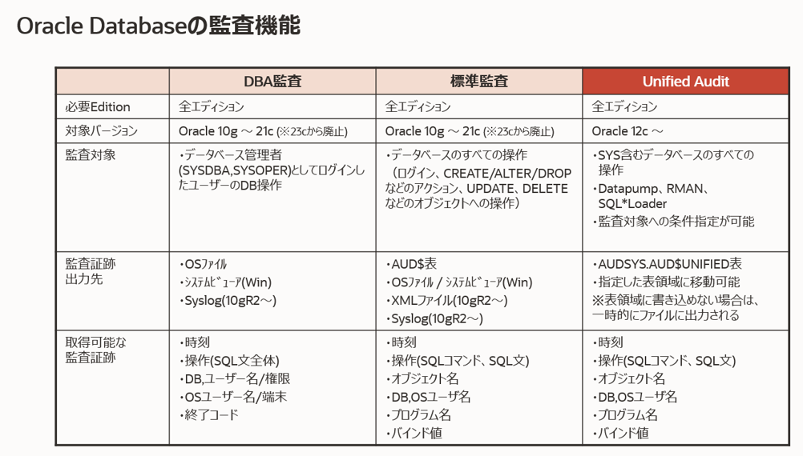
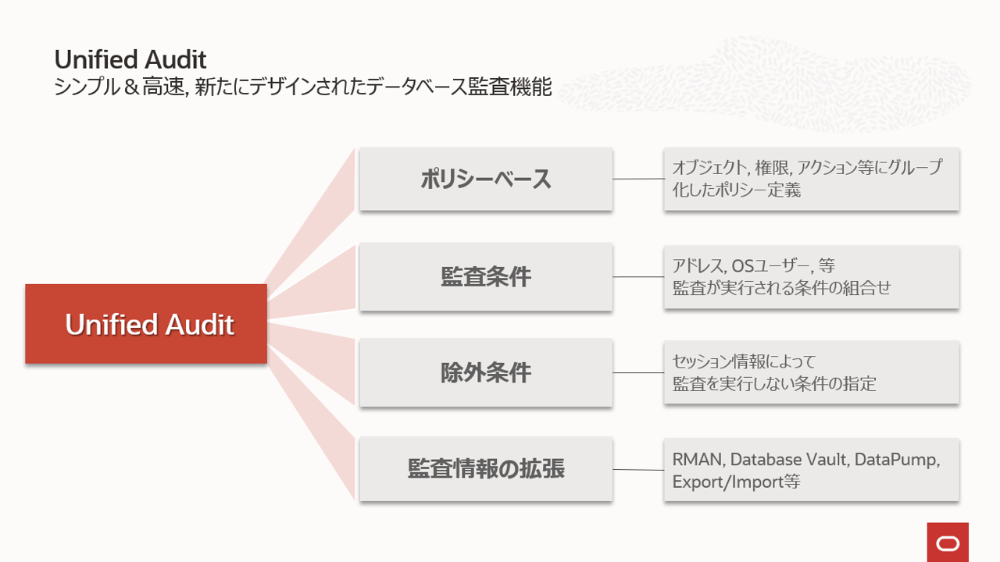
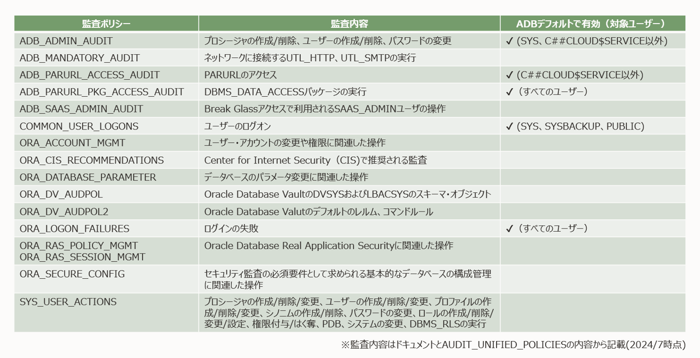

はじめに
Oracle Databaseではデータベースに対する操作を記録する監査機能が提供されています。
 
データベース監査機能についての詳細はこちらのドキュメントをご覧ください。
Autonomous Databaseは、統合監査を利用した、いくつかの監査設定があらかじめ行われています。また必要に応じて任意の監査設定を追加できます。 この章では、Autonomous Databaseの監査設定と監査レコードの管理について紹介します。
目次 :
前提条件 :
- 監査対象の表は任意のスキーマの表でも構いませんが、ここでは、「102:ADBにデータをロードしよう(Database Actions)」 で作成したADBUSERスキーマのSALES_CHANNELS表を利用しています。
- SQLコマンドを実行するユーザー・インタフェースは、接続の切り替えが容易なので、SQL*Plusを利用していますが、Database Actionsでも実行可能です。ユーザーでの接続をログインに読み替え、必要なユーザーでログインしなおしてください。なお、 SQL*Plusの環境は、「204:マーケットプレイスからの仮想マシンのセットアップ方法」で作成できます。
- チュートリアルの便宜上Autonomous Databaseへの接続文字列は「atp01_low」、各ユーザのパスワードはすべて「Welcome12345#」とします。
- 使用パッケージの引数の説明は記載していません。詳細はドキュメント『PL/SQLパッケージ及びタイプ・リファレンス』（リンクは19c版です）をご参照ください。
所要時間 : 約20分
1. デフォルトの監査設定の確認
統合監査では、監査対象を監査ポリシーで定義し、定義された監査ポリシーを有効化することで監査レコードが生成されます。 Autonomous Databaseにはよく利用される監査対象用に事前定義済みの監査ポリシーがあり、そのうち5つがデフォルトで有効化されています。

作成済みの監査ポリシーはUNIFIED_AUDIT_POLICIESビュー、有効化された監査ポリシーはAUDIT_UNIFIED_ENABLED_POLICIESビューで確認することができます。
SQL*Plusを起動して以下を実行してください。
-- ADMINで接続する
CONNECT admin/Welcome12345#@atp01_low
-- SQL*Plusのフォーマット用コマンド
set pages 100
set lines 200
col policy_name for a30
col entity_name for a30
--作成済みの監査ポリシーを確認する
SELECT distinct policy_name FROM AUDIT_UNIFIED_POLICIES;
-- 有効化されているポリシーを確認する
SELECT * FROM AUDIT_UNIFIED_ENABLED_POLICIES;
結果 :
SQL> SELECT distinct policy_name FROM AUDIT_UNIFIED_POLICIES;
POLICY_NAME
------------------------------
ADB_PARURL_ACCESS_AUDIT
ORA_DV_AUDPOL2
ADB_ADMIN_AUDIT
SYS_USER_ACTIONS
ORA_CIS_RECOMMENDATIONS
ADB_SAAS_ADMIN_AUDIT
COMMON_USER_LOGONS
ORA_ACCOUNT_MGMT
ORA_DATABASE_PARAMETER
ADB_MANDATORY_AUDIT
ADB_PARURL_PKG_ACCESS_AUDIT
ORA_LOGON_FAILURES
ORA_DV_AUDPOL
ORA_SECURECONFIG
ORA_RAS_SESSION_MGMT
ORA_RAS_POLICY_MGMT
16 rows selected.
SQL> SELECT * FROM AUDIT_UNIFIED_ENABLED_POLICIES;
POLICY_NAME ENABLED_OPTION ENTITY_NAME ENTITY_ SUC FAI
------------------------------ --------------- ------------------------------ ------- --- ---
ADB_ADMIN_AUDIT EXCEPT USER SYS USER YES NO
ADB_ADMIN_AUDIT EXCEPT USER C##CLOUD$SERVICE USER YES NO
ADB_PARURL_ACCESS_AUDIT BY USER C##CLOUD$SERVICE USER YES YES
ORA_LOGON_FAILURES BY USER ALL USERS USER NO YES
ADB_PARURL_PKG_ACCESS_AUDIT BY USER ALL USERS USER YES YES
COMMON_USER_LOGONS BY USER SYS USER YES YES
COMMON_USER_LOGONS BY USER SYSBACKUP USER YES YES
COMMON_USER_LOGONS BY USER PUBLIC USER YES YES
8 rows selected.
事前定義済みの監査ポリシーと有効化されている監査ポリシーの確認ができました。
2. 任意の監査設定の追加
次に監査対象となる操作を指定して監査ポリシーを作成してみましょう。
「102:ADBにデータをロードしよう(Database Actions)」 で作成したADBUSERスキーマのSALES_CHANNELS表への操作を監査対象にします。
ADMINユーザで以下を実行してください。
-- ADMINユーザーで実行する
-- ADBUSER.SALES_CHANNELS表に対するADBUSERからのDMLを監査するポリシーの作成
CREATE AUDIT POLICY sales_channels_pol
ACTIONS SELECT ON adbuser.sales_channels,UPDATE on adbuser.sales_channels,DELETE ON adbuser.sales_channels;
-- 作成したポリシーを確認する(set、colはSQL*Plusのフォーマット用のコマンド)
col audit_option for a10
col object_schema for a20
col object_name for a20
SELECT policy_name,audit_option,audit_option_type,object_schema,object_name FROM audit_unified_policies
WHERE policy_name='SALES_CHANNELS_POL';
結果 :
SQL> CREATE AUDIT POLICY sales_channels_pol
2 ACTIONS SELECT ON adbuser.sales_channels,UPDATE on adbuser.sales_channels,DELETE ON adbuser.sales_channels;
Audit policy created.
SQL> SELECT policy_name,audit_option,audit_option_type,object_schema,object_name FROM audit_unified_policies
2 WHERE policy_name='SALES_CHANNELS_POL';
POLICY_NAME AUDIT_OPTI AUDIT_OPTION_TYPE OBJECT_SCHEMA OBJECT_NAME
------------------------------ ---------- ------------------ -------------------- --------------------
SALES_CHANNELS_POL DELETE OBJECT ACTION ADBUSER SALES_CHANNELS
SALES_CHANNELS_POL SELECT OBJECT ACTION ADBUSER SALES_CHANNELS
SALES_CHANNELS_POL UPDATE OBJECT ACTION ADBUSER SALES_CHANNELS
新しい監査ポリシーを作成することができました。
続けて、作成した監査ポリシーを有効化します。
-- ADMINユーザで実行する
-- 監査ポリシーをadbuserに対してのみ有効化する
AUDIT POLICY sales_channels_pol BY adbuser
-- 有効化したポリシーを確認する
SELECT * FROM AUDIT_UNIFIED_ENABLED_POLICIES;
結果 :
SQL> AUDIT POLICY sales_channels_pol BY adbuser;
Audit succeeded.
SQL> SELECT * FROM AUDIT_UNIFIED_ENABLED_POLICIES;
POLICY_NAME ENABLED_OPTION ENTITY_NAME ENTITY_ SUC FAI
------------------------------ --------------- ------------------------------ ------- --- ---
ADB_ADMIN_AUDIT EXCEPT USER SYS USER YES NO
ADB_ADMIN_AUDIT EXCEPT USER C##CLOUD$SERVICE USER YES NO
ADB_PARURL_ACCESS_AUDIT BY USER C##CLOUD$SERVICE USER YES YES
SALES_CHANNELS_POL BY USER ADBUSER USER YES YES ★追加されている
ORA_LOGON_FAILURES BY USER ALL USERS USER NO YES
ADB_PARURL_PKG_ACCESS_AUDIT BY USER ALL USERS USER YES YES
COMMON_USER_LOGONS BY USER SYS USER YES YES
COMMON_USER_LOGONS BY USER SYSBACKUP USER YES YES
COMMON_USER_LOGONS BY USER PUBLIC USER YES YES
9 rows selected.
作成した監査ポリシーが有効化されていることが確認できました。
Note :
- 監査ポリシーは表やビューなどのオブジェクトへの操作だけでなく、特定の権限を使用する操作や特定の条件下での操作を対象にすることができます。 詳細についてはドキュメント『Oracleデータベース・セキュリティ・ガイド』の“26 監査ポリシーの構成”（リンクは19c版です）をご確認ください。
- 監査は、要件を満たすための設定が原則ですが、データベース内のすべての操作を監査するというのは実用的ではありません。必要な対象や操作を絞って設定するようにしてください。
3. 監査対象の操作を実行(監査レコードの生成)
監査レコードを生成させるために、監査対象の操作を実行してみましょう。ADMINユーザーとADBユーザーでログオン失敗とSALES_CHANNLES表の検索を行います。
-- 違うパスワードを入力してADBUSERでの接続を失敗する
CONNECT adbuser/test@atp01_low
-- ADBUSERで接続をする
CONNECT adbuser/Welcome12345##@atp01_low
--ADBUSERで実行する
SELECT count(*) from sales_channels;
-- 違うパスワードを入力してADMINでの接続を失敗する
CONNECT admin/test@atp01_low
-- ADMINで接続をする
CONNECT admin/Welcome12345##@atp01_low
-- ADMINで実行する
SELECT count(*) from adbuser.sales_channels;
結果 :
SQL> CONNECT adbuser/test@atp01_low
ERROR:
ORA-01017: invalid username/password; logon denied →1:ADBUSERでログオンエラー
Warning: You are no longer connected to ORACLE.
SQL> CONNECT adbuser/Welcome12345##@atp01_low
Connected.
SQL> SELECT count(*) from sales_channels; →2:ADBUSERでsales_channels表にアクセス
COUNT(*)
----------
5
SQL> CONNECT admin/test@atp01_low
ERROR:
ORA-01017: invalid username/password; logon denied →3:ADMINでログオンエラー
Warning: You are no longer connected to ORACLE.
SQL> CONNECT admin/Welcome12345##@atp01_low
Connected.
SQL> SELECT count(*) from adbuser.sales_channels;
COUNT(*)
----------
5
4. 監査レコードの確認
統合監査では生成された監査レコードはUNIFIED_AUDIT_TRAILディクショナリビューに書き込まれます。どのような監査レコードが生成されたか確認してみましょう。
-- ADMINで実行する
-- UNIFIED_AUDIT_TRAILを直近1時間分検索する（set、colはSQL*Plusのフォーマット用コマンド）
col event_timestamp for a30
col dbusername for a10
col sql_text for a50
col unified_audit_policies for a23
SELECT event_timestamp,dbusername,sql_text,unified_audit_policies FROM unified_audit_trail
WHERE event_timestamp > SYSDATE -1/24 order by event_timestamp desc;
結果 :
SQL> SELECT event_timestamp,dbusername,sql_text,unified_audit_policies FROM unified_audit_trail
2 WHERE event_timestamp > SYSDATE -1/24 order by event_timestamp desc;
EVENT_TIMESTAMP DBUSERNAME SQL_TEXT UNIFIED_AUDIT_POLICIES
------------------------------ ---------- -------------------------------------------------- -----------------------
16-JUL-24 06.05.47.384801 AM ADMIN ORA_LOGON_FAILURES →3: ADMINでログオン失敗
16-JUL-24 06.02.48.181643 AM ADBUSER SELECT count(*) from sales_channels SALES_CHANNELS_POL →2: ADBUSERで検索
16-JUL-24 05.59.56.529327 AM ADBUSER ORA_LOGON_FAILURES →1: ADBUSERでログオン失敗
デフォルトで有効化されている監査ポリシー「ORA_LOGON_FAILURES」は全てのユーザーに対しログオンの失敗を監査します。そのため、ADMINユーザー、ADBユーザーのログオンの失敗が記録されています。
一方、新しく作成したSALES_CHANNELS表の監査ポリシー「SALES_CHANNELS_POL」は、ADBUSERユーザーに対してのみ有効であるため、ADMINユーザーのSELECT文は記録されず、ADBUSERユーザーのSELECT文のみ記録されていることが確認できます。
Note :
今回は時刻とユーザー名、SQL文、監査ポリシーを表示させましたが、UNIFIED_AUDIT_TRAILビューはセッションIDや端末情報など他にも多くの項目を持ちます。詳細は こちらのドキュメントをご確認ください。
5. 監査構成の削除
追加したSALES_CHANNES表の監査設定を削除しましょう。手順は追加と逆で、まず無効化を行い、その後に削除となります。
-- ADMINでポリシーの無効化を実行
NOAUDIT POLICY sales_channels_pol by adbuser;
-- ポリシーを削除
DROP AUDIT POLICY sales_channels_pol;
結果 :
SQL> NOAUDIT POLICY sales_channels_pol by adbuser;
Noaudit succeeded.
SQL> DROP AUDIT POLICY sales_channels_pol;
Audit Policy dropped.
Note :
- AUDIT_UNIFIED_POLICIESビューのCOMMON列がYESである事前定義監査ポリシーはコンテナ・データベースレベルで設定する共通ポリシーであるため無効化はできません。
- 事前定義の監査ポリシーの削除はできません。「ORA-46389: Oracle事前定義済ポリシーを変更または削除できません」というエラーとなります。
6. 監査レコードの削除
Autonomous Databaseでは記録される監査レコードは毎日1回パージ（削除）ジョブが自動的に実行され、14日間より以前のものは削除されます。しかし、監査ポリシーの数と種類、操作の量によっては監査レコードが大きくなり大量のストレージを使用する可能性があります。そのため、DBMS_AUDIT_MGMT.CLEAN_AUDIT_TRAILプロシージャを使用した監査レコードの削除もサポートされています。ADMINユーザーで監査レコードを削除してみましょう。
-- ADMINで実行
-- 現在の監査レコード数を確認
SELECT count(*) FROM unified_audit_trail;
-- 削除を実行
BEGIN
DBMS_AUDIT_MGMT.CLEAN_AUDIT_TRAIL(
audit_trail_type => dbms_audit_mgmt.audit_trail_unified, --監査証跡タイプををパッケージの定数から選択：audit_trail_unifiedは統合監査証跡
use_last_arch_timestamp => FALSE --対象の監査レコード：FALSEはすべての監査レコード、TRUEはSET_LAST_ARCHIVE_TIMESTAMPプロシージャでセットしたタイムスタンプより前に作成されたレコード
);
END;
/
-- 削除後の監査レコード数を確認
SELECT count(*) FROM unified_audit_trail;
結果 :
SQL> SELECT count(*) FROM unified_audit_trail;
COUNT(*)
----------
14
SQL> BEGIN
2 DBMS_AUDIT_MGMT.CLEAN_AUDIT_TRAIL(
3 audit_trail_type => dbms_audit_mgmt.audit_trail_unified,
4 use_last_arch_timestamp => FALSE
5 );
6 END;
7 /
PL/SQL procedure successfully completed.
SQL> SELECT count(*) FROM unified_audit_trail;
COUNT(*)
----------
1
削除が完了しました。しかし、削除後の監査レコードが1件となっています。4. 監査レコードの確認で使ったSQLで確認してみましょう。
結果 :
SQL> SELECT event_timestamp,dbusername,sql_text,unified_audit_policies FROM unified_audit_trail
2 WHERE event_timestamp > SYSDATE -1/24 order by event_timestamp desc;
EVENT_TIMESTAMP DBUSERNAME SQL_TEXT UNIFIED_AUDIT_POLICIES
------------------------------ ---------- -------------------------------------------------- -----------------------
16-JUL-24 06.17.12.088850 AM ADMIN BEGIN ORA$MANDATORY
DBMS_AUDIT_MGMT.CLEAN_AUDIT_TRAIL(
audit_trail_type => dbms_audit_mgmt.a
これは監査レコードの削除操作の監査レコードです。UNIFIED_AUDIT_TRAILビューの元であるAUDSYSスキーマのAUD$UNIFIED表への操作はすべて監査対象となります。そのため、監査レコードが生成されています。
Note :
- 監査レコードの削除はAUDIT_ADMINロールをもつユーザーが実行できます。ADMINユーザーはデフォルトでAUDIT_ADMINロールを持ちます。DBMS_AUDIT_MGMTパッケージ の詳細はこちらのドキュメントをご確認ください。
- Autonomous Databaseの自動実行パージジョブの対象となる期間は14日間固定です。変更はできません。
- 監査レコードを書き込む空き領域がないとエラーが発生し、運用に影響を及ぼします。自動実行パージジョブで対応が十分でない場合は、システムの利用状況に合わせた定期的な手動削除を行うこともご検討ください。
おわりに
このチュートリアルではAutonomous Databaseの監査設定および監査レコードの管理について紹介しました。
なお、Autonomous Database内の監査レコードの保持期間は14日間になりますが、Oracle Data Safeを利用すると1カ月から12カ月までの間で保持期間の指定ができ、さらに監査レポートの生成も可能です。Oracle Data Safeはグラフィカルなユーザー・インターフェースで包括的にOracle Databaseのセキュリティ管理ができるサービスです。Autonomous Databaseを含むOCI Databaseサービスの場合は、100万監査レコード/月までは無償となりますのでぜひお試しください。
Note :
- Oracle Data Safeの有効化についてはこちらをご覧ください。
- Oracle Data SafeはAlways Free環境のAutonomous Databaseでは利用できません。
参考資料
- Oracle Autonomous Databaseサーバーレスの使用 “35 Autonomous Databaseの監査”
- Oracle Database 19c 『Oracle Database セキュリティ・ガイド』“第VI部 監査を使用したデータベース・アクティビティの管理”
以上でこの章は終了です。次の章にお進みください。